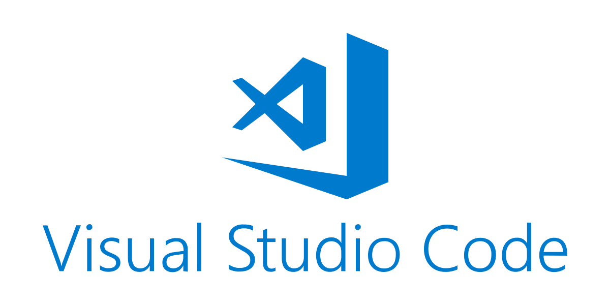

UltraEdit es un editor de texto versátil y potente conocido por manejar con facilidad archivos complejos y grandes. Inicialmente lanzado en 1994, ha evolucionado en una herramienta que satisface una amplia gama de necesidades profesionales, incluyendo la codificación, manipulación de texto y clasificación de archivos.
BBEdit es un editor profesional de HTML y texto para macOS, conocido por su confiabilidad y rendimiento. Desarrollado por Bare Bones Software, es una elección popular entre los usuarios de macOS para diseño y desarrollo web, así como para edición de texto de propósito general.
BBEdit es conocido por su interfaz limpia e intuitiva, lo que lo hace accesible para principiantes mientras proporciona la profundidad de características requeridas por usuarios avanzados. Sus menús bien organizados y su extensa documentación también ayudan en la usabilidad.
Visual Studio Code (VS Code) es un editor de texto gratuito y de código abierto desarrollado por Microsoft. Es muy apreciado en la comunidad de programadores por su versatilidad, entorno rico en funciones y soporte para muchos lenguajes de programación diferentes.
VS Code encuentra un equilibrio entre funcionalidad y facilidad de uso. Su interfaz es lo suficientemente intuitiva para principiantes, mientras que su amplia personalización y características avanzadas satisfacen las necesidades de los desarrolladores experimentados.
